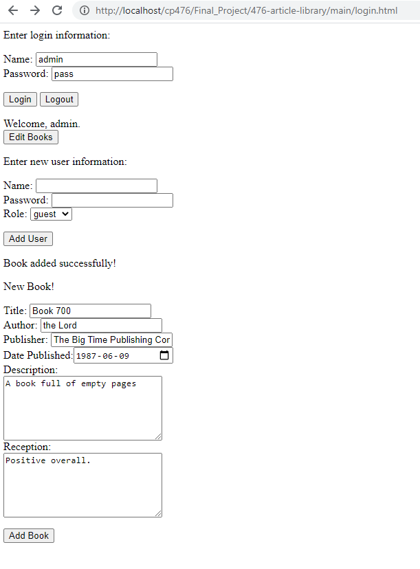
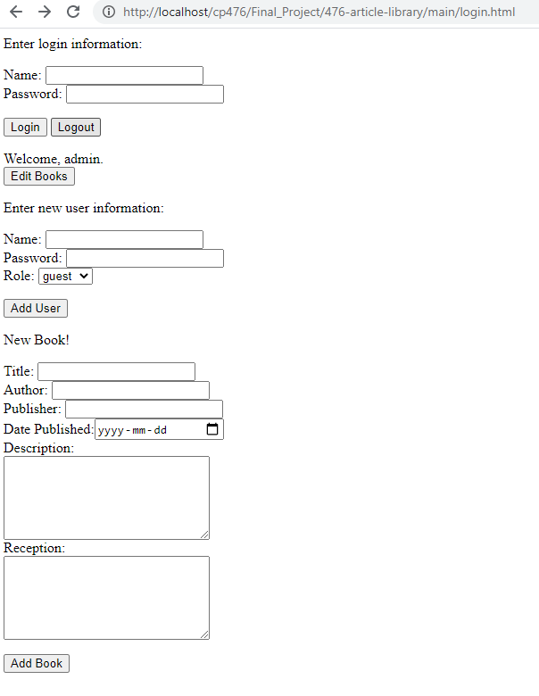
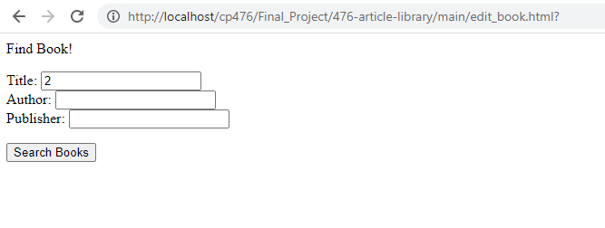
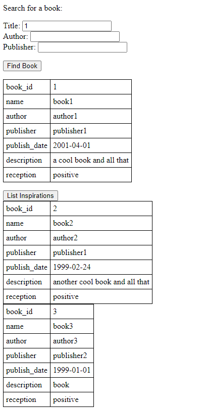
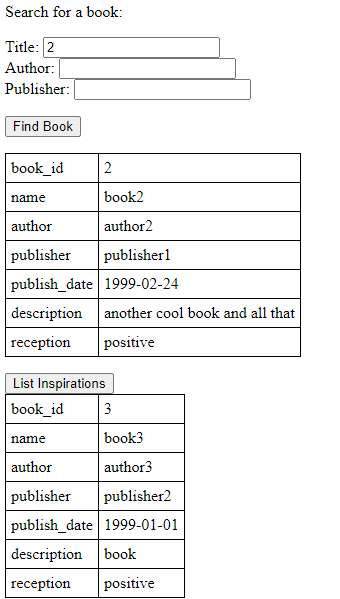

Michael Child-Wynne-Jones, Morgenne Besenschek, Chang Xing Li
While our UI is not stylish, it is responsive and robust. We use JQuery to create dynamic, responsive webpages, which are tailored to a user’s permissions and which use cookies to keep users logged in for 30 minutes.
 
Our page use AJAX to communicate with the server side components, which are written in PHP. For example, the login page sends its data to the server, which checks against the database, and sends a role back if valid.

Our database has 6 tables:

The users table is a completely independant table for storing login information and roles.
The main table is books, as it stores the information for each unique book entry in the database. The other four tables are child tables that store tangential information about books, usually in a one-to-many relationship. Keywords stores individual keywords mapped to book ids, reviews stores individual reviews for each book, articles stores a unique article for each book, and inspirations store a link between one book and another (if the other book was an inspiration/source for the book).
Using the 256-bit Secure Hashing Algorithm, we are able to store user passwords as hashes, allowing us to verify passwords without an intruder being able to steal them from our storage.

However, our project does not make use of some other useful tools, such as Docker, and we believe this is a small shortcoming.
Books in our webapp have a component known as Inspirations. If a book was inspired by (or references) another book, we can enter that inspiration into the database’s inspirations table. We implemented a BFS algorithm to retrieve stored inspirations from the database and create a list of inspirations, custom for each individual book. The core of this algorithm is taking the inspirations of each book, and adding those inspirations to the list in order. So, if a user wants an inspirations list for book 1, they will see book 2 (which inspired book 1) as well as book 3 (which inspired book 2). We believe this feature is useful for a curious reader to see a chain of influence through famous works. Ideally (with more time), we would implement this as a tree instead of a list, to better visualise the degrees of relation among the inspirations.
 
Our webapp is very responsive with almost no UI lag of any kind. In situations where excessive output or data may be generated (such as getting an inspiration list in 1000s), we’ve placed reasonable limits on how much data is retrieved from the database (usually a limit of 100 rows) reducing all worst-case performance.